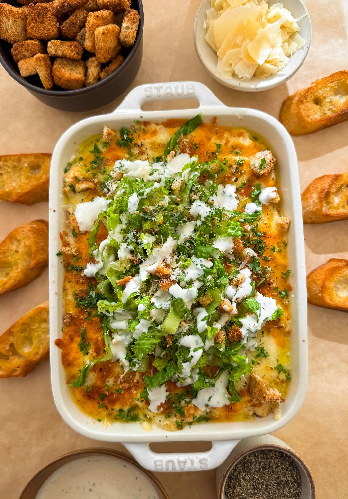

Appetizer
Caesar Salad Dip
PREP TIME: 20 Minutes
COOK TIME: 10 Minutes
TOTAL TIME: 30 Minutes
YIELDS: 6 to 7
Let me be the first to introduce you to Caesar Salad Dip! Imagine
all the flavors of your favorite Caesar salad, but in a warm,
creamy dip that's perfect for any occasion. With tender rotisserie
chicken, a homemade Caesar dressing, and a bubbly cheese topping,
this dip is an absolute must-try—top it with fresh lettuce,
crunchy croutons, and a sprinkle of bacon, and you’ll have
everyone asking for the recipe!
Jump to Recipe
Appetizer
Caesar Salad Dip
Let me be the first to introduce you to Caesar Salad Dip!
Imagine all the flavors of your favorite Caesar salad, but in
a warm, creamy dip that's perfect for any occasion. With
tender rotisserie chicken, a homemade Caesar dressing, and a
bubbly cheese topping, this dip is an absolute must-try—top it
with fresh lettuce, crunchy croutons, and a sprinkle of bacon,
and you’ll have everyone asking for the recipe!
Print Recipe
Pin Recipe
PREP TIME: 20 Minutes
COOK TIME: 10 Minutes
TOTAL TIME: 30 Minutes
YIELDS: 6 to 7
Ingredients
CAESAR DRESSING
- 1 cup mayonnaise
- 1/4 cup buttermilk
- 1/4 cup whole milk
- 1 tablespoon lemon juice
- 1/2 tablespoon Worcestershire sauce
- 2 teaspoons minced garlic
- 2 teaspoons yellow mustard
- 1 teaspoon anchovy paste
- 1 teaspoon dried parsley
- 1/2 teaspoon black pepper
- 1/2 cup parmesan, freshly grated
FOR ASSEMBLY
- 1 cup shredded mozzarella cheese
- 1/2 cup shredded cheddar cheese
- 1 teaspoon Italian seasoning, optional
- 1 cup thinly chopped romaine lettuce
- 1/2 cup croutons, crushed
- 1/4 cup grated parmesan
- 1/2 cup chopped cooked bacon, optional
Instructions
DRESSING:
-
In a medium bowl, whisk together the mayonnaise,
buttermilk, whole milk, lemon juice, Worcestershire sauce,
minced garlic, yellow mustard, anchovy paste, dried
parsley, black pepper, and freshly grated parmesan cheese
until smooth and well-combined.
-
In a large mixing bowl, add the shredded rotisserie chicken.
-
Pour the homemade Caesar dressing over the chicken and mix
until the chicken is thoroughly coated with the dressing.
ASSEMBLY AND BAKING:
- Preheat your oven’s broiler.
-
Transfer the chicken and dressing mixture to an oven-safe
baking dish.
-
Sprinkle the shredded mozzarella cheese and cheddar cheese
evenly over the top of the chicken mixture. Add a dash of
Italian seasoning evenly across the top.
-
Place the baking dish under the broiler and broil until
the cheese is melted and bubbly, about 3-5 minutes. Keep a
close eye on it to prevent burning.
SERVING:
- Remove the dish from the oven and let it cool slightly.
-
Top the broiled dip with the thinly chopped romaine
lettuce, crushed croutons, grated parmesan cheese, and
chopped cooked bacon if using.
-
Drizzle extra Caesar dressing over the top if desired.
-
Serve the Caesar Salad Dip warm with your favorite dipping
options like crackers, baguette slices, or vegetable
sticks. Enjoy!